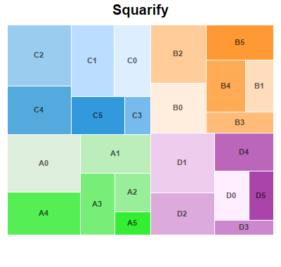
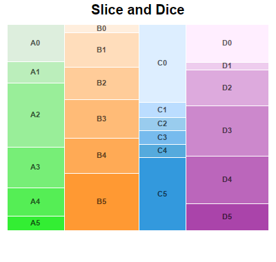
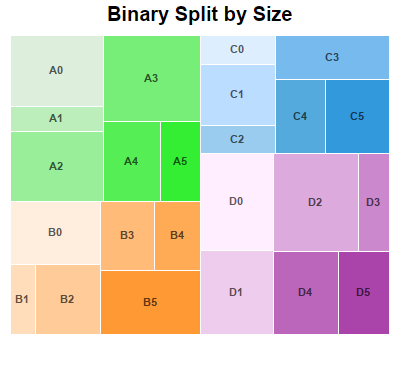
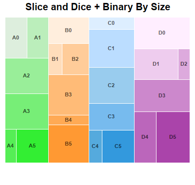
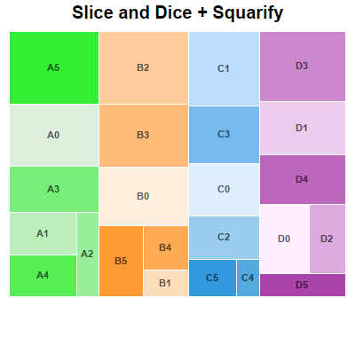
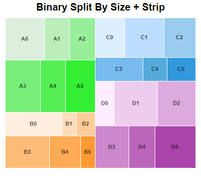

The example demonstrates various tree map layout methods for multi-level tree maps.
In ChartDirector, each node in a tree map can be configured to use a different layout method for its child nodes using
TreeMapNode.setLayoutMethod. The The prototype node, available via
TreeMapChart.getLevelPrototype, can also be used to set a default layout method for nodes a certain level.
The following is the command line version of the code in "cppdemo/multileveltreemaplayout". The MFC version of the code is in "mfcdemo/mfcdemo". The Qt Widgets version of the code is in "qtdemo/qtdemo". The QML/Qt Quick version of the code is in "qmldemo/qmldemo".
#include "chartdir.h"
void createChart(int chartIndex, const char *filename)
{
// The first level nodes of the tree map. There are 4 nodes.
const char* names[] = {"A", "B", "C", "D"};
const int names_size = (int)(sizeof(names)/sizeof(*names));
// Use random numbers for second level nodes
RanSeries* r = new RanSeries(11 + chartIndex);
DoubleArray series0 = r->getSeries(6, 10, 100);
DoubleArray series1 = r->getSeries(6, 10, 100);
DoubleArray series2 = r->getSeries(6, 10, 100);
DoubleArray series3 = r->getSeries(6, 10, 100);
// Colors for second level nodes
int colors0[] = {0xddeedd, 0xbbeebb, 0x99ee99, 0x77ee77, 0x55ee55, 0x33ee33};
const int colors0_size = (int)(sizeof(colors0)/sizeof(*colors0));
int colors1[] = {0xffeedd, 0xffddbb, 0xffcc99, 0xffbb77, 0xffaa55, 0xff9933};
const int colors1_size = (int)(sizeof(colors1)/sizeof(*colors1));
int colors2[] = {0xddeeff, 0xbbddff, 0x99ccee, 0x77bbee, 0x55aadd, 0x3399dd};
const int colors2_size = (int)(sizeof(colors2)/sizeof(*colors2));
int colors3[] = {0xffeeff, 0xeeccee, 0xddaadd, 0xcc88cc, 0xbb66bb, 0xaa44aa};
const int colors3_size = (int)(sizeof(colors3)/sizeof(*colors3));
// Create a Tree Map object of size 400 x 380 pixels
TreeMapChart* c = new TreeMapChart(400, 380);
// Set the plotarea at (10, 35) and of size 380 x 300 pixels
c->setPlotArea(10, 35, 380, 300);
// Obtain the root of the tree map, which is the entire plot area
TreeMapNode* root = c->getRootNode();
// Add first level nodes to the root. We do not need to provide data as they will be computed as
// the sum of the second level nodes.
root->setData(DoubleArray(), StringArray(names, names_size));
// Add second level nodes to each of the first level node
root->getNode(0)->setData(series0, StringArray(), IntArray(colors0, colors0_size));
root->getNode(1)->setData(series1, StringArray(), IntArray(colors1, colors1_size));
root->getNode(2)->setData(series2, StringArray(), IntArray(colors2, colors2_size));
root->getNode(3)->setData(series3, StringArray(), IntArray(colors3, colors3_size));
// Get the prototype (template) for the first level nodes.
TreeMapNode* nodeConfig = c->getLevelPrototype(1);
// Hide the first level node cell border by setting its color to transparent
nodeConfig->setColors(-1, Chart::Transparent);
// Get the prototype (template) for the second level nodes.
TreeMapNode* nodeConfig2 = c->getLevelPrototype(2);
// Set the label format for the nodes to include the parent node's label and index of the second
// level node. Use semi-transparent black (3f000000) Arial Bold font and put the label at the
// center of the cell.
nodeConfig2->setLabelFormat("{parent.label}{index}", "Arial Bold", 8, 0x3f000000, Chart::Center)
;
// Set the second level node cell border to white (ffffff)
nodeConfig2->setColors(-1, 0xffffff);
if (chartIndex == 0) {
// Squarify (default) - Layout the cells so that they are as square as possible.
c->addTitle("Squarify", "Arial Bold", 15);
} else if (chartIndex == 1) {
// Slice and Dice - First level cells flow horizontally. Second level cells flow vertically.
// (The setLayoutMethod also supports other flow directions.)
c->addTitle("Slice and Dice", "Arial Bold", 15);
root->setLayoutMethod(Chart::TreeMapSliceAndDice);
} else if (chartIndex == 2) {
// Binary Split by Size - Split the cells into left/right groups so that their size are as
// close as possible. For each group, split the cells into top/bottom groups using the same
// criteria. Continue until each group contains one cell. (The setLayoutMethod also supports
// other flow directions.)
c->addTitle("Binary Split by Size", "Arial Bold", 15);
root->setLayoutMethod(Chart::TreeMapBinaryBySize);
nodeConfig->setLayoutMethod(Chart::TreeMapBinaryBySize);
} else if (chartIndex == 3) {
// Layout first level cells using Slice and Dice. Layout second level cells using Binary
// Split By Size.
c->addTitle("Slice and Dice + Binary By Size", "Arial Bold", 15);
root->setLayoutMethod(Chart::TreeMapSliceAndDice);
nodeConfig->setLayoutMethod(Chart::TreeMapBinaryBySize);
} else if (chartIndex == 4) {
// Layout first level cells using Slice and Dice. Layout second level cells using Squarify.
c->addTitle("Slice and Dice + Squarify", "Arial Bold", 15);
root->setLayoutMethod(Chart::TreeMapSliceAndDice);
nodeConfig->setLayoutMethod(Chart::TreeMapSquarify);
} else if (chartIndex == 5) {
// Layout first level cells using Binary Split By Size.. Layout second level cells using
// Strip. With Strip layout, cells flow from left to right, top to bottom. The number of
// cells in each row is such that they will be as close to a square as possible. (The
// setLayoutMethod also supports other flow directions.)
c->addTitle("Binary Split By Size + Strip", "Arial Bold", 15);
root->setLayoutMethod(Chart::TreeMapBinaryBySize);
nodeConfig->setLayoutMethod(Chart::TreeMapStrip);
}
// Output the chart
c->makeChart(filename);
//free up resources
delete r;
delete c;
}
int main(int argc, char *argv[])
{
createChart(0, "multileveltreemaplayout0.png");
createChart(1, "multileveltreemaplayout1.png");
createChart(2, "multileveltreemaplayout2.png");
createChart(3, "multileveltreemaplayout3.png");
createChart(4, "multileveltreemaplayout4.png");
createChart(5, "multileveltreemaplayout5.png");
return 0;
}
© 2023 Advanced Software Engineering Limited. All rights reserved.